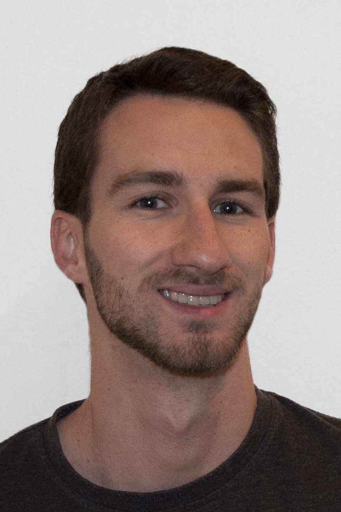

☰
Home
Architektur
Photogrammetrie
Über mich

Kontakt
Dipl.-Ing. Hanspeter Kals
Dietrichsteingasse 7/1
1090 Wien
hp.kals@gmx.at
+43 660 3905753
Ausbildung
Master Studium der Architektur an der Technischen Universität Wien (2015-2019)
Zivildienst beim Roten Kreuz Kitzbühel (2011)
Bachelor Studium der Architektur an der Technischen Universität Wien (2010-2015)
Aufbaulehrgang/ Kolleg für Design in St. Pölten (2008-2010)
Fachschule für Tischlerei in Hallein (2004-2008)
Berufliche Praxis
10/2017-07/2018 Praktikum bei Ulrich Huhs Architekten, Wien
10/2015, 10/2016, 10/2017 Messestandaufbau des österreichischen Gemeinschaftsstandes bei der Buchmesse Frankfurt
7/2009-09/2009 Praktikum bei Zimmerei Holzbau Hölzl, Reith bei Kitzbühel
Mehrere Sommerjobs bei Tischlereien
Skills
Software
ArchiCAD
Rhino + Grasshopper
AutoCAD
Blender
CS Adobe
Blender
Unreal Engine 4
Programmieren
Python
HTML+CSS
Photogrammetrie
Reality Capture
Colmap